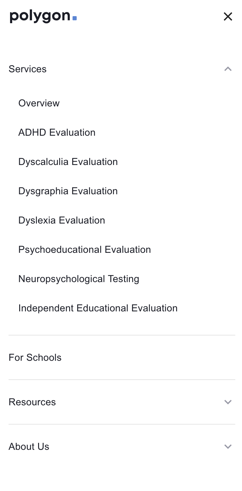
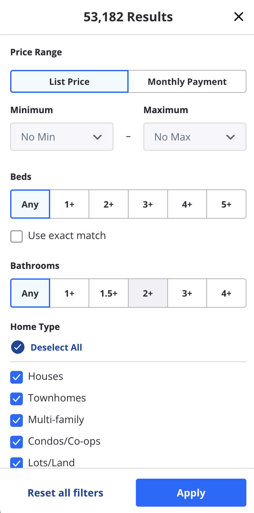

Hicks Law
Polygon
hellopolygon.com The point of the design principle behind Polygon is to simplify decision making for persons that might or might not have ADHD to make it easier to decide if this works for them. Everything is kind of bunched together into a simple 3 step sign on process making little to no imagination of how to sign on to help peoples with ADHD as well as other disorders which can be seen on the home page. Now the menus are also organized as well in such way that hick's law is being used nearly perfectly, as you can see in the above screenshot. As Hick's law dictates a simplification decision making and keeping things as simple as possible. In this case for the users and other around them.
Rule of Thirds
Zillow
zillow.com/homes/ In this screenshot it uses the Rule of Thirds rule to break down list price or monthly payment from the minimum and maximum home prices. From there the amount of bedrooms and bathrooms are broken down into two separate pieces to make it easier for users. From there you then have the otpion to deselect home styles that you, the user, does not find desireable. The Rule of Thirds rule is executed perfectly in the above screen shot as a way to break down important piece of information (in this case) into three distinct portions, thus executing The Rule of Thirds rule perfectly.
Fitt's Law